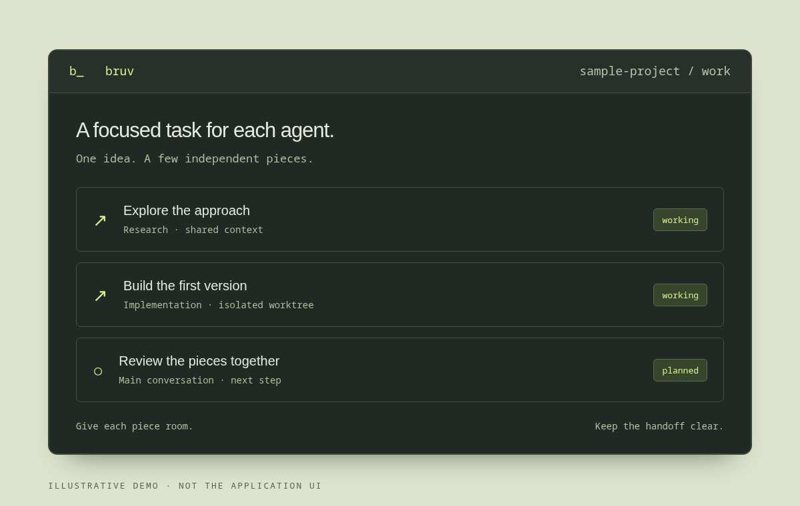
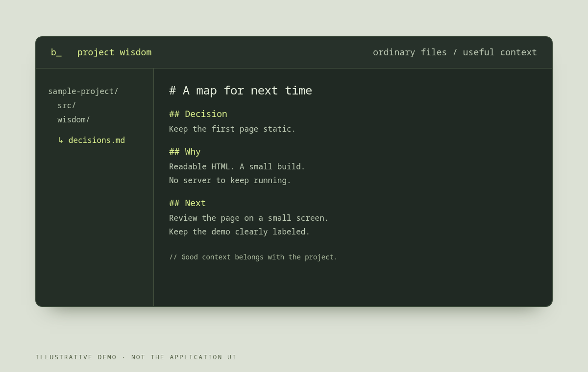

[ A ] DELEGATE
Give the work some space.
Use sub-agents for focused tasks. Share a checkout, or give independent changes an isolated Git worktree.
About worktrees ↗A CODING AGENT FOR YOUR TERMINAL
Meet Bruv. A coding agent built on Pi, at home in your terminal. Bring the idea. Share the work. Keep the context that matters.
Linux · macOS Apple Silicon · Android Termux
See the
install guide for supported architectures.

Give independent work its own space. Bring the findings back together.
Enlarge illustration Illustration, not an application screenshot.[ A ] DELEGATE
Use sub-agents for focused tasks. Share a checkout, or give independent changes an isolated Git worktree.
About worktrees ↗[ B ] KEEP MOVING
Shell commands and sub-agents can run in the background. Keep the conversation going while longer work continues.
Explore the CLI ↗[ C ] REMEMBER
Keep decisions, lessons and next steps in project wisdom: ordinary files in your repository, ready to read.
Look inside project wisdom ↓
LESS RECONSTRUCTING. MORE BUILDING.
Good work leaves a trail. Project wisdom lives beside your code, not just in a conversation you have to find again.
OPEN A TERMINAL. MAKE SOMETHING.
Follow the repository’s install guide for supported systems and current paired-release status, or build from source.
Open install guide ↗MIT-licensed code. Configure credentials and models at runtime. Model providers have their own access requirements and may charge for usage.
Bruv is a terminal coding agent built on Pi. The CLI includes background jobs, sub-agents, project wisdom and optional Herdr integration.
A Git worktree gives independent code changes their own checkout. Keep focused work separate, then review and bring the pieces together. Read the workspace guide ↗
Bruv has a native connector for a separately installed,
unmodified T3 Code frontend. T3 is not bundled with Bruv.
bruv web shows setup guidance; compatibility is
version-specific. See the
external T3 setup and known limitations ↗.